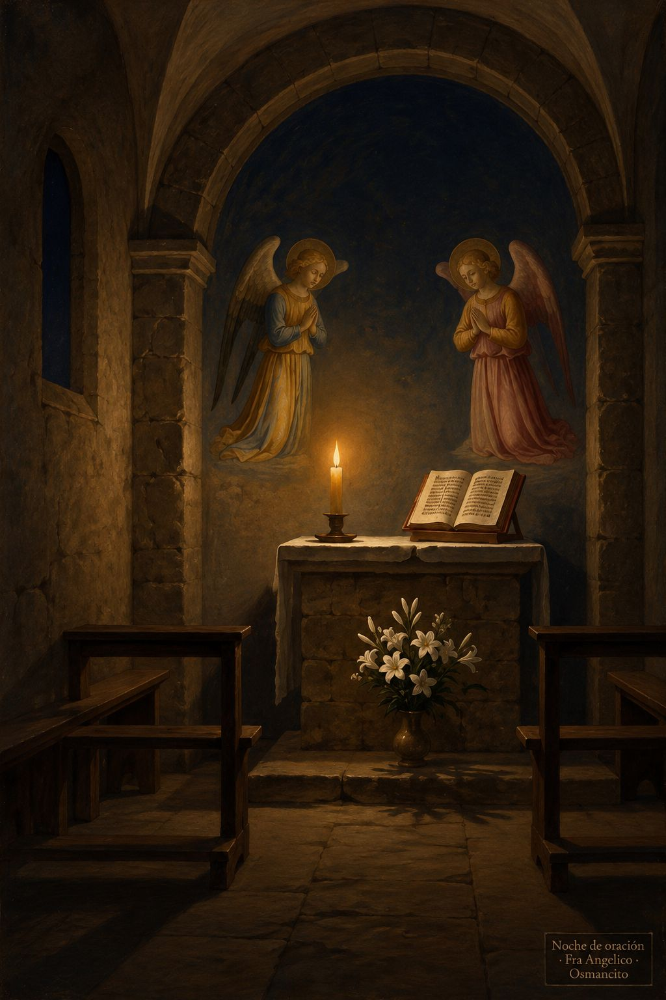

Capilla
Una capilla es un lugar pequeño destinado a la oración. La palabra viene del latín medieval cappella, diminutivo de cappa, capa: así se llamó el santuario donde se guardaba la capa de san Martín, y luego cualquier espacio pequeño de oración. Aquí, cada día, una lectura breve abre un espacio para la atención y el recogimiento.
Entradas
Levanten la cabeza · 26 de noviembre de 2026. Una lectura sobre la caída de la gran ciudad que se creía eterna, la alegría de servir y dar gracias, y la cabeza en alto porque la liberación se acerca.
Ni un cabello · 25 de noviembre de 2026. Una lectura sobre el cántico de los vencedores junto al mar de cristal, la firmeza sin miedo que consigue la vida, y la memoria de santa Catalina de Alejandría, virgen y mártir.
La mies madura · 24 de noviembre de 2026. Una lectura sobre la mies que madura para la hoz, las piedras del templo que no durarán y la fidelidad sin pánico, con la memoria de san Andrés Dũng-Lạc y compañeros, mártires.
Todo lo que tenía · 23 de noviembre de 2026. Una lectura sobre la viuda que da todo lo que tiene para vivir, el cántico nuevo del Cordero en el monte, y las memorias de san Columbano, el beato Miguel Pro y san Clemente I.
El rey pastor · 22 de noviembre de 2026. Una lectura sobre el pastor que busca a la oveja perdida, el rey que reina hasta entregar el reino al Padre y el juicio que mide lo que hicimos con el más insignificante.
Dios de vivos · 21 de noviembre de 2026. Una lectura sobre el testimonio que la muerte no apaga, el Dios de Abraham, Isaac y Jacob que no es Dios de muertos sino de vivos, y la memoria de la Presentación de la Virgen María.
Dulce y amarga · 20 de noviembre de 2026. Una lectura sobre comer la palabra entera, dulce como la miel y amarga al bajar, y dejar que limpie la casa del corazón hasta volverla casa de oración.
Reconocer la visita · 19 de noviembre de 2026. Una lectura sobre el llanto por la ciudad que no reconoció su hora y el libro sellado que el Cordero ya abrió: comprender, mientras es tiempo, lo que conduce a la paz.
Invertir lo recibido · 18 de noviembre de 2026. Una lectura sobre recibirlo todo como moneda prestada y hacerlo fructificar sin miedo, con la dedicación de las Basílicas de San Pedro y San Pablo y la memoria de santa Rosa Filipina Duchesne.
Abrir la puerta · 17 de noviembre de 2026. Una lectura sobre dejar la tibieza, bajar del árbol y abrir la puerta al que toca, con la memoria de santa Isabel de Hungría.
Volver a ver · 16 de noviembre de 2026. Una lectura sobre pedir la vista sin callar y volver al primer amor, con las memorias de santa Margarita de Escocia y santa Gertrudis.
Desenterrar el talento · 15 de noviembre de 2026. Una lectura sobre poner a trabajar lo que se nos dio, sin miedo ni sueño, con las manos abiertas al pobre.
Clamar día y noche · 14 de noviembre de 2026. Una lectura sobre pedir sin cansarse, seguros de que la justicia llega, y sobre ayudar al hermano que sigue de camino.
Las manos abiertas · 13 de noviembre de 2026. Una lectura sobre caminar en el amor y soltar lo que nos impide entregar la vida, con la memoria de santa Francisca Javier Cabrini.
Entre nosotros · 12 de noviembre de 2026. Una lectura sobre recibir al otro como hermano y reconocer a Dios en los gestos cercanos, con la memoria de san Josafat.
Volver a dar gracias · 11 de noviembre de 2026.
Servir sin medir · 10 de noviembre de 2026.
Un río que sana · 9 de noviembre de 2026.
Lámparas en la noche · 8 de noviembre de 2026.
Fieles en lo pequeño · 7 de noviembre de 2026.
Amigos para mañana · 6 de noviembre de 2026.
Cien ovejas y una · 5 de noviembre de 2026.
Antorchas en el mundo · 4 de noviembre de 2026.
Todavía hay lugar · 3 de noviembre de 2026.
En las manos de Dios · 2 de noviembre de 2026.
Los dichosos · 1 de noviembre de 2026.